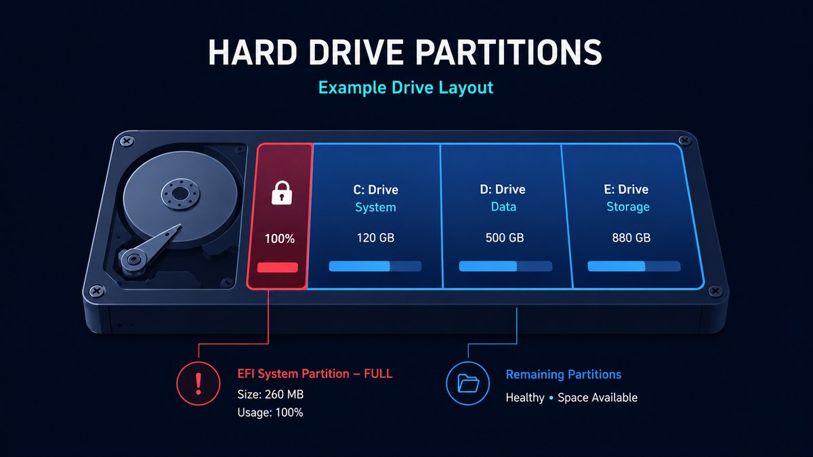
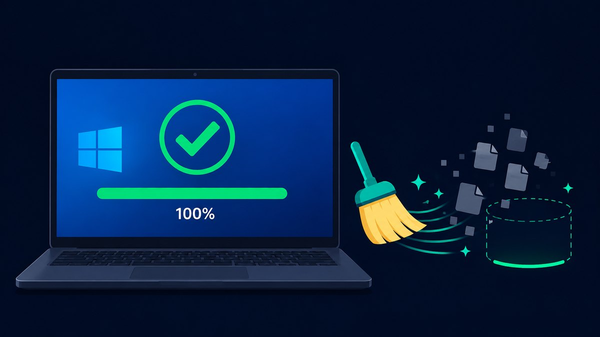

If your PC keeps trying to install the May 2026 Windows 11 update, grinds to a halt around 35%, reboots, and then throws error 0x800f0922 — you're not alone, and your PC isn't broken. This one has a specific, boring cause and a fix that takes about ten minutes.
I dug through Microsoft's own advisory and the pile of Reddit threads to figure out exactly what's going on. Short version: a tiny, hidden partition on your drive filled up, and the update has nowhere to put its files. Here's the full story and how to get the update to actually install.
What error 0x800f0922 actually means
The May 2026 cumulative update (KB5089549) fails on a subset of PCs during the reboot phase of installation — typically stalling at around 35% before rolling back. When you check Windows Update history, you see the cryptic code 0x800f0922.
Microsoft confirmed the cause: the update can't complete because there isn't enough free space in the EFI System Partition (ESP) — a small, hidden partition that stores the files your PC needs to boot. Systems with roughly 10 MB or less free in that partition are the ones that fail. Everything else about your PC can be perfectly healthy and you'll still hit it.
If you dig into the update logs on an affected machine, you'll spot entries like SpaceCheck and ServicingBootFiles failed — that's Windows literally telling you it ran out of room in the boot partition during the reboot stage.
Why a partition you've never heard of is the problem

Your drive isn't one single block of space. It's split into partitions, and one of them — the EFI System Partition — is usually only 100–260 MB. You never see it in File Explorer. It holds the boot loader and a few system files, and Windows manages it silently.
Here's the catch: every few updates, Microsoft adds new boot files to that partition. On PCs that were upgraded from older Windows versions (rather than clean-installed), the ESP is often on the smaller side. Over time it fills up. The May 2026 update needed a bit more room than was available, the write failed mid-reboot, and you got 0x800f0922.
So this isn't a virus, a failing drive, or a broken Windows install. It's a full cupboard. We just need to clear a shelf.
The fastest fix: get current on updates
Good news — Microsoft already fixed this. The fix first shipped on May 26, 2026 as the optional preview update KB5089573 (for Windows 11 24H2 and 25H2), and the permanent fix rolled into the June 9 Patch Tuesday update. So in most cases you just need to get current:
- Open Settings → Windows Update.
- Click Check for updates and install everything offered — including KB5089573 or the June cumulative update if you see it.
- Reboot, then retry the update that kept failing. On most affected PCs it now installs cleanly.
If your PC doesn't have enough free space to even download that fix, clear some room first (Step 1 below), then check for updates again.
Step-by-step: free up space and force the update through
Step 1 — Clear the easy disk space first
The update also wants breathing room on your main C: drive, and clearing junk here sometimes resolves it on its own:
- Open Settings → System → Storage.
- Click Temporary files, tick everything safe (Temp files, Recycle Bin, old delivery-optimization files, and the Windows.old folder if present), and click Remove files.
- The Windows.old folder alone is often 10–30 GB. Removing it gives the updater plenty of room.
Step 2 — Run the Windows Update troubleshooter
This resets stuck update components without you touching the command line:
- Go to Settings → System → Troubleshoot → Other troubleshooters.
- Find Windows Update and click Run.
- Let it finish, reboot, and try the update again.
Step 3 — Reset Windows Update components manually (if it still fails)
Open Command Prompt as Administrator (right-click Start → Terminal (Admin)) and run these one at a time:
net stop wuauserv
net stop bits
ren %systemroot%\SoftwareDistribution SoftwareDistribution.old
net start wuauserv
net start bitsThis renames the folder where Windows stores half-downloaded update files, forcing a clean re-download. Reboot and retry. This clears the large majority of stubborn 0x800f0922 cases.
Step 4 — Last resort: expand the EFI partition
If nothing above works, the ESP itself genuinely needs to be enlarged. This is more involved (it requires disk-management tools and a little care), so unless you're comfortable with partitions, it's worth waiting a few days — Microsoft is actively pushing the KB5089573 fix to more machines, and it solves this without any partition surgery.
How to stop it happening every month

The pattern behind almost every "update won't install" error is the same: not enough free space. Windows updates are large, they stage files in several places, and a drive that's 95% full is a drive that fails updates.
Keeping 15–20 GB free on your C: drive prevents the overwhelming majority of these failures. The boring-but-true maintenance habit:
- Empty the Recycle Bin and clear temp files monthly.
- Remove the Windows.old folder after a feature update (you don't need it after a couple of weeks).
- Uninstall apps you stopped using — each one leaves cache behind.
One honest caveat: no cleaning tool — including mine — fixes the EFI partition or repairs Windows Update itself. That's what the KB5089573 / June update above is for. What a cleaner does do is stop your C: drive from filling up, which is the cause of most other update failures and general slowdowns. That's why I built RBS PC Cleaner: it safely clears temp files, the Windows Update cache, browser and app cache, shows you exactly how much space it reclaimed, and never touches the registry or the boot partition. Free, offline, no subscription. RBS Optimizer Pro adds startup and performance management if you want the wider tune-up — but neither one reverts or repairs a Windows update. Use them to keep space free so updates stop failing next month, not to undo this one.
TL;DR — the 0x800f0922 fix
- Install the latest Windows update (KB5089573 or the June Patch Tuesday update) — it contains Microsoft's fix.
- Clear temp files + Windows.old in Settings → System → Storage.
- Run the Windows Update troubleshooter.
- Still stuck? Reset update components with the 5 commands above.
Bottom line
Error 0x800f0922 on the May 2026 update looks scary but it's one of the more fixable Windows errors. It's almost always a full EFI System Partition or a low-on-space C: drive — not a hardware fault. Install KB5089573, clear some space, and the update goes through.
If your PC has also been feeling full and sluggish, cleaning up the C: drive is worth doing while you're here — grab RBS PC Cleaner free if you want it in a couple of clicks. Just don't expect any cleaner to repair Windows Update; for that, the KB5089573 / June update is the actual fix.
Hit a different update error or want a walkthrough for your specific PC? Reach me on the contact page — solo dev, Singapore, I read every message.